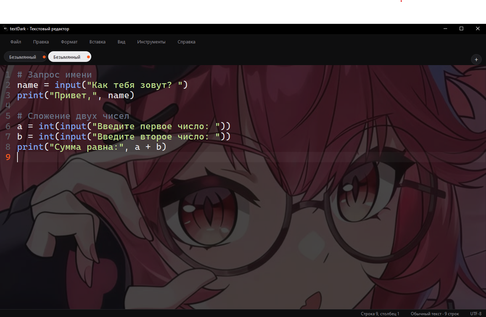

01 / ДОКУМЕНТЫ
Несколько документов
Открывай текстовые файлы и код в отдельных вкладках. Переключайся между ними, не теряя рабочий контекст.
notes.txtmain.pydraft.md+
Простой тёмный редактор для заметок, документов и исходного кода. Открыл — и сразу можно работать.

textDark не отвлекает от главного. Открывай файлы, редактируй текст и код, настраивай внешний вид — всё в одном месте.
Открывай текстовые файлы и код в отдельных вкладках. Переключайся между ними, не теряя рабочий контекст.
UTF-8, нумерация строк, подсветка синтаксиса и текущей строки.
Собственный формат с автоматическим AES-256-GCM шифрованием и расшифровкой.
Выбери изображение и настрой его прозрачность, затемнение и размытие.
Автозакрытие скобок и кавычек, базовые автоотступы, плавные анимации и восстановление несохранённого текста.
Сохраняй документ в собственном формате textDark. Содержимое шифруется при сохранении и автоматически открывается внутри редактора.
Подробнее о формате ↗Небольшое предупреждение: все копии textDark используют общий встроенный ключ. Формат удобен для обмена файлами, но не предназначен для хранения паролей и особо конфиденциальных данных.
Скачай textDark 3.1 и попробуй сам. Приложение собрано в один EXE-файл для Windows x64.
Скачать textDark 3.1